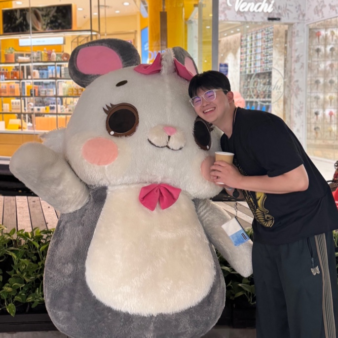

Minsuk Jang (Jaden)
KAIST – Computational Intelligence Lab
3D Vision | Remote Sensing | Digital Twin
Email |
GitHub |
LinkedIn
Research Interests
- Digital Twin
- 3D Vision
- LiDAR
- NeRF
Projects
- DepthViz: A Mobile LiDAR Scanner for Digital Twin.
- Forest Survey Automation: Drone-based 3D vision system for forest monitoring.
- Green Algae Detection: ML-based clustering pipeline for satellite imagery.
Publications
- VisionCycle: Neural Radiance Fields labeling pipeline. IEIE 2024
- Validating NeRF Point Clouds: Comparative Study using KITTI. KINPR 2024
- Smart Vessel Cameras: SIFT & Geometry-based association. IEIE 2024
Awards
- 🏆 Jeju Satellite Competition - Grand Prize
- 🥇 Yonsei Startup Demo Day - Excellence Award
- 🥇 Seoul Drone Contest - Mayor’s Award
- 🥈 Yonsei Engineering Innovation - Dean's Award
- 🥈 Fusion Challenge - Excellence Award
- 🥈 Gyeonggi ESG Hackathon - Excellence Award
- 🥈 Yonsei Idea Contest - Excellence Award
- 🎖 AI Drone Challenge - 4th Place
- 🎖 Smart Civil Engineering Contest - Encouragement Award
Patents
- Mobile Mapping System (10-2024-0130327)
- Forest Carbon Analysis System (10-2024-0153987)
- High-Precision 3D from DEM (10-2024-0165631)
- Satellite Algae Detection via ML (10-2024-0165632)
- VTOL Drone with CG Control (10-2024-0177539)